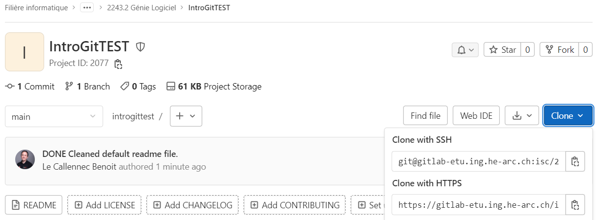
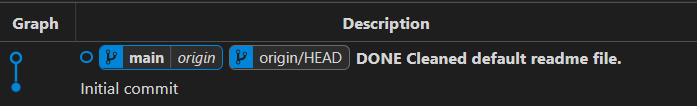
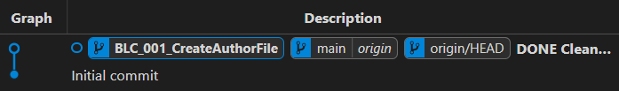
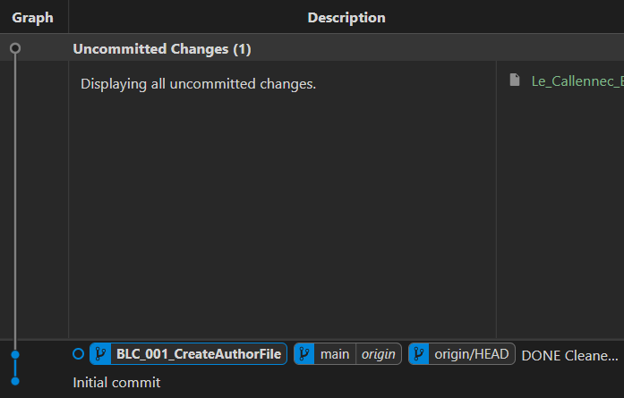
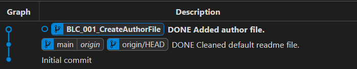
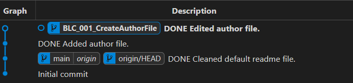
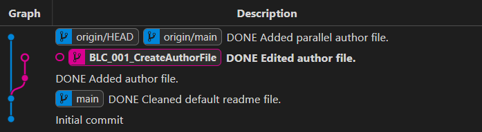
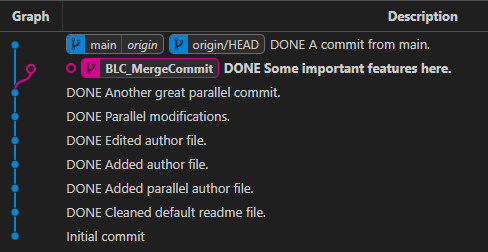
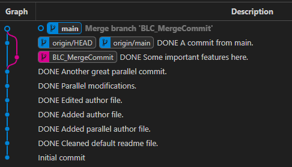
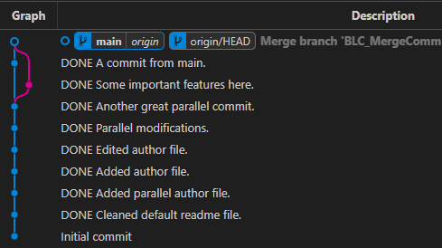

Chapitre 9
Git : le modèle et la boucle quotidienne
9.1 Qu'est-ce que Git ?
9.2 Installation, configuration, clone
9.3 Le modèle : Working Tree, Index, HEAD
9.4 Observer l'état courant
9.5 Enregistrer ses modifications
9.6 La boucle quotidienne
Exercice
9.1 Qu'est-ce que Git ?
Un logiciel de gestion de versions
- Git, SVN, Mercurial, Perforce…
Conserve l'historique de toutes les modifications avec l'auteur, les différences ligne par ligne, la date, etc.
Permet de fusionner des modifications faites au même endroit, en même temps
Indispensable pour le travail collaboratif (mais aussi seul)
Git est la base de services comme GitHub ou GitLab
9.1 Avantages et désavantages de Git
9.2 Installation
Créer ses clés SSH
https://gitlab-etu.ing.he-arc.ch/labinfo/support/-/wikis/how-to-use-git-with-gitlab
9.2 Configuration
git config --global user.name "votre_nom"
git config --global user.email email@he-arc.ch
9.2 Cloner votre repo GitLab

git clone <votre_repo>.git
9.3 Vue d'ensemble : définitions
| Le dossier de travail, avec les modifications en cours | |
| Le prochain commit en préparation : une copie de | |
| Dernier commit de la branche actuelle |
9.3 Vue d'ensemble

9.4 État courant : git status
On branch main
Your branch is up to date with 'origin/main'.
Changes to be committed:
(use "git restore --staged <file>..." to unstage)
modified: Le_Callennec_Benoit.txt
Changes not staged for commit:
(use "git add <file>..." to update what will be committed)
(use "git restore <file>..." to discard changes in working directory)
modified: Le_Callennec_Benoit_2.txt
Untracked files:
(use "git add <file>..." to include in what will be committed)
Le_Callennec_Benoit_3.txt
💻 9.4 État courant : git diff
diff --git a/Le_Callennec_Benoit_2.txt b/Le_Callennec_Benoit_2.txt
index d93666c..d1cf665 100644
--- a/Le_Callennec_Benoit_2.txt
+++ b/Le_Callennec_Benoit_2.txt
@@ -3,3 +3,4 @@ Version 0.2: parallel commit.
Version 0.3: parallel commit 2.
Version 0.4: parallel commit 3.
Version 0.5: parallel commit coming from main.
+Version 0.6: some modifications to mark it as modified.
💻 9.4 État courant : git log
commit 7c37a406966c5e0401c8d829fb01d34492b89fd7 (HEAD -> main)
Author: Benoit Le Callennec <benoit.lecallennec@he-arc.ch>
Date: Sat Dec 2 19:02:48 2023 +0100
DONE Commit for testing log command
commit 4681cfb6898c692b136e178011429f0307f3114f (origin/main, origin/HEAD)
Merge: 1358c5c 40818e5
Author: Benoit Le Callennec <benoit.lecallennec@he-arc.ch>
Date: Sun Nov 26 20:35:34 2023 +0100
Merge branch 'BLC_MergeCommit'
…
💻 9.4 État courant : git log
> git log origin/main..HEAD
commit 7c37a406966c5e0401c8d829fb01d34492b89fd7 (HEAD -> main)
Author: Benoit Le Callennec <benoit.lecallennec@he-arc.ch>
Date: Sat Dec 2 19:02:48 2023 +0100
DONE Commit for testing log command
💻 9.4 État courant : git log
> git log --oneline --graph --all
* 029e608 (HEAD -> main, solving_mess3) DONE Doing important stuff
* 276dd8f DONE Doing stuff
* 10cfc1e (solving_mess2, oupsy) DONE Mega algorithm first time!
* 9588849 (solving_mess, DEV) DONE Start state
* 354b29c Merge branch 'DEV' into main
|\
| * 47c7d2b DONE Modifications on DEV branch
* | 0742d49 DONE Modifications on main branch
|/
* 02c59e8 DONE Restart fresh
* d0bdcf7 Merge branch 'DEV'
|\
| * dcdd6d9 DONE Modifications on DEV branch
* | cb62e0c DONE Modifications on main branch
|/
* 12ae636 DONE Mega algo
* b4dd580 DONE mega_algorithm
* a74a189 DONE Added merge conflict tests
* 9f1cb20 DONE Some more modifications
* a80552c DONE Made some modifications
* b9a1d86 DONE Added file1 to repo
* 4c713c8 (origin/main, origin/HEAD) Initial commit
9.5 git add + git commit
git add <file>
git commit -m "<message>"
💻 9.5 git add
Avant :
On branch main
Your branch is ahead of 'origin/main' by 1 commit.
(use "git push" to publish your local commits)
Changes to be committed:
(use "git restore --staged <file>..." to unstage)
modified: Le_Callennec_Benoit_2.txt
Untracked files:
(use "git add <file>..." to include in what will be committed)
Le_Callennec_Benoit_3.txt
💻 9.5 git add
Le fichier apparaît deux fois : la version dans l'index et la version modifiée depuis.
Changes to be committed:
(use "git restore --staged <file>..." to unstage)
modified: Le_Callennec_Benoit_2.txt
Changes not staged for commit:
(use "git add <file>..." to update what will be committed)
(use "git restore <file>..." to discard changes in working directory)
modified: Le_Callennec_Benoit_2.txt
9.5 git commit --verbose
# Please enter the commit message for your changes. Lines starting
# with '#' will be ignored, and an empty message aborts the commit.
#
# On branch main
# Your branch is ahead of 'origin/main' by 1 commit.
#
# Changes to be committed:
# modified: Le_Callennec_Benoit_2.txt
#
# ------------------------ >8 ------------------------
# Do not modify or remove the line above.
# Everything below it will be ignored.
diff --git a/Le_Callennec_Benoit_2.txt b/Le_Callennec_Benoit_2.txt
index d93666c..74a0b8c 100644
--- a/Le_Callennec_Benoit_2.txt
+++ b/Le_Callennec_Benoit_2.txt
@@ -3,3 +3,5 @@ Version 0.2: parallel commit.
Version 0.3: parallel commit 2.
Version 0.4: parallel commit 3.
Version 0.5: parallel commit coming from main.
+Version 0.6: some modifications to mark it as modified.
+Version 0.7: some modifications while already in index.
9.5 git commit --all
git add -u
git commit ...
Ne commite pas les nouveaux fichiers
9.6 Faire des modifications
- Se mettre à jour sur
main - Créer une nouvelle branche
- Faire des modifications sur sa branche
9.6 Faire des modifications - MAJ
Récupérer les dernières modifications sur main
Moderne
git switch main
git pull --rebase
Classique
git checkout main
git pull --rebase

9.6 git switch ou git checkout ?
Depuis Git 2.23, ses rôles sont séparés en deux commandes plus claires :
| Classique | Moderne |
9.6 Faire des modifications - Branche
Créer sa branche de développement
Moderne
git switch -c <Dev>_<Id>_<Summary>
Classique
git branch <Dev>_<Id>_<Summary>
git checkout <Dev>_<Id>_<Summary>

9.6 Faire des modifications

9.6 Faire des modifications - status
Un nouveau fichier (vide) a été créé :
> git status
On branch BLC_001_CreateAuthorFile
Untracked files:
(use "git add <file>..." to include in what will be committed)
Le_Callennec_Benoit.txt
nothing added to commit but untracked files present (use "git add" to track)
9.6 Faire des modifications - commit
> git add Le_Callennec_Benoit.txt
> git commit -m "DONE Added author file."
[BLC_001_CreateAuthorFile ed58dd9] DONE Added author file.
1 file changed, 0 insertions(+), 0 deletions(-)
create mode 100644 Le_Callennec_Benoit.txt

9.6 Faire des modifications - diff
Le fichier est maintenant suivi : après l'avoir édité,
(
> git diff
diff --git a/Le_Callennec_Benoit.txt b/Le_Callennec_Benoit.txt
index e69de29..0a64225 100644
--- a/Le_Callennec_Benoit.txt
+++ b/Le_Callennec_Benoit.txt
@@ -0,0 +1,4 @@
+Author: Benoit Le Callennec
+Version 0.1: first edit to this file.
+
+
9.6 Faire des modifications - commit #2
git add Le_Callennec_Benoit.txt
git commit -m "DONE Edited author file."

9.6 Publier ses modifications
- Fusionner ses modifications avec
main - Pousser ses modifications
- Effacer sa branche locale
9.6 Publier ses modifications - fetch
Pendant ce temps, quelqu'un a poussé sur
git fetch

9.6 Publier ses modifications - mettre à jour main
Moderne
git switch main
git pull --rebase
Classique
git checkout main
git pull --rebase

9.6 Publier ses modifications - merge
git merge <Dev>_<Id>_<Summary>

9.6 Publier ses modifications - push
git push origin main
9.6 Publier ses modifications - Clean
git branch --delete <Dev>_<Id>_<Summary>

💻 Exercice
Par groupes de 2, reproduire les exemples donnés dans ce chapitre, sur un repo GitLab commun :
- Les deux membres clonent le repo
- Chacun crée sa branche
<Dev>_<Id>_<Summary> et y commite un fichier à son nom - A fusionne sa branche dans
main et pousse - B fait
git fetch et observe l'historique, puis met à jourmain , fusionne sa branche et pousse - Chacun efface sa branche locale
- Comparer
git log des deux côtés